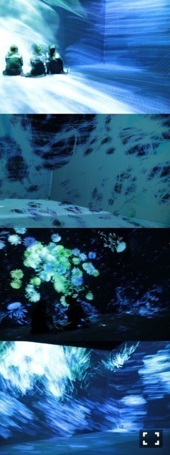

| 2016/10 07 Fri | 斎藤ちはる いい日の基準(´>∀<｀)ゝ |
ちはるーむへようこそ！！
偶然通りかかった牛丼屋さんの匂いに
つられて思わず入ろうかと本気で悩んだり
餃子がどうしても食べたくなって
我慢できなくて食べたり
つまずいて転びそうになったり×2
壁に激突したり
靴のヒールが取れそうになったり
納豆こぼしそうになったり
レモネード頼んだと思ったら
レモンティー頼んでたり
強風に飛ばされそうになったり
今日はそんな一日でした( ˙³˙)
そんないい日ではない( ˙³˙)笑
金曜日なのに！
学校も終わってお仕事も終わって
いい一日になるはずなのに！
1週間のラストなのに〜！
( ˙-˙ )
めーちゃんと愛未にも
最近会ってないな〜
ライブとかあって毎日一緒にいたから
少しでも会ってないと
なんか変な感じがする！
それくらいずっと
時を共に過ごしてるってことだね( ˘ω˘ )
時を共に...( ˘ω˘ )笑
-------------------------♡
そんないい一日ではなかった今日を
少しでもいい一日にするために
行ってきました！
六本木ヒルズ、森美術館で行なってる
「宇宙と芸術展」！
宇宙について。
星について。
地球儀や宇宙儀について。
宇宙人について。
未来について。
天文学の歴史について。
絵画について。
隕石について。
化石について。
沢山の展示があり
とても充実した内容でした！！
カメラOKのところは
お得意のマイカメラで撮りまくりました。
社会科見学の中学生に混じって
1人の女子大生がカシャカシャと。
全部素晴らしかったんだけど、
わたし的にお気に入りだったのはこの作品！
チームラボさんの
≪追われるカラス、追うカラスも追われるカラス、そして衝突して咲いていく -Light in Space≫

長方形の真っ黒の部屋に
横の壁と床に映し出される映像。
それは一瞬宇宙の中にいるんじゃないかと
錯覚させるようなもので
不思議な感覚に陥りました。
数えきれない程沢山のカラス。
そのカラスは光を描き
物凄いスピードで私たちの周りを
飛び回っている。
そして最終的に描かれる
光の中に咲く花々。
圧巻でした。
思わず3回も観てしまいました。
出ては並び、出ては並び。
多分入口のスタッフさんには
またかよ！と思われたと思います( ´ｰ`)
写真は、飛び回るカラス達、
弧を描く光の筋を追いましたが
やっぱりどれもブレブレ。。
でもそのブレブレさ加減が
味だと思うので私は気に入ってます！
他にも沢山写真撮ったので
また機会がある時に載せます(﹡ˆ ˆ﹡)
はぁ〜写真見返してみても綺麗だったな〜
やっぱり今日はいい日だったかも(﹡ˆ ˆ﹡)
１ついい事あると
他の悪いこと吹っ飛ぶ気がするから
何か１つでも楽しいこと見つけたいね！
-------------------------♡
♬ ChihaMusic
「君に出会えたから」miwaさん
声が力強くも可愛らしくて好き。
夏はもう終わってしまったけど
この曲のおかげで
夏のキラキラ感を今でも感じられる。
"一瞬のきらめき 永遠じゃないからこそ忘れないよ"
って歌詞が好き！
青春を謳歌しつつも、
だけど終わってしまう、
消えてしまうものの儚さを感じる。
明日は"UTB+"発売日だよ(﹡ˆ ˆ﹡)
皆さんに是非観てほしい！
心も見た目もほぼすっぴん。
ナチュラルな私です。
勇者ヨシヒコ。
今日だ。。
♡
おやすみ〜
斎藤ちはる